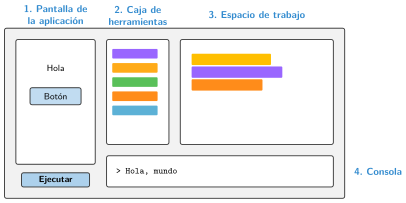

El entorno de programación por bloques: Code.org
🤔 Pienso5 min
Qué hago aquí: Piensa un momento y contesta con lo que ya sabes. No pasa nada si no lo sabes: es para empezar.
Entra en studio.code.org con el código de la clase. Crea un proyecto de App Lab. Ponle tu nombre. Copia aquí su dirección para encontrarlo otro día.
📖 Leo y aprendo15 min
Qué hago aquí: Lee despacio, mira los dibujos y los ejemplos, y quédate con la idea clave del final.
Code.org es una web gratuita para aprender a programar. Usamos App Lab: sirve para crear aplicaciones con botones, textos, imágenes y sonidos.

App Lab tiene dos modos:
- Modo diseño: colocas botones, textos e imágenes. A cada uno le pones un nombre, su id.
- Modo código: programas lo que hace la aplicación.
✏️ Hago25 min
Qué hago aquí: Haz las actividades en orden. Empieza siempre por las básicas.
Escribe el nombre de las cuatro partes de App Lab.
Haz que la consola escriba «Hola». ¿Dónde aparece el mensaje?
En el modo diseño, añade un botón. Cambia su id a botonHola. ¿Dónde se cambia el id?
Haz que la consola escriba tu nombre, tu curso y tu deporte favorito. ¿En qué orden salen?
Pulsa Mostrar texto. Copia cómo se escribe tu programa en JavaScript. ¿En qué se parece a los bloques?
✏️ Puedes responder escribiendo, con un dibujo o un esquema, o contándolo en voz alta.
🚀 Amplío (si quieres saber más)
Qué hago aquí: ¿Has terminado? Lee la curiosidad o elige el reto. Es voluntario.
Busca un bloque que haga sonar un sonido y otro que cambie el color de fondo. Añádelos y escribe su nombre.
✅ Compruebo5 min
Qué hago aquí: Contesta sin mirar la ficha y marca cómo lo llevas.